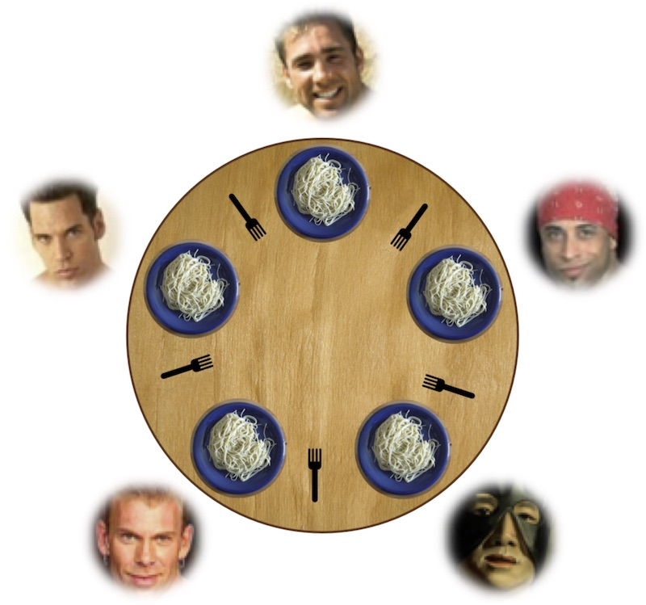

并发控制：同步
Overview
复习
- 互斥：自旋锁、互斥锁、futex
- ~~是时候面对真正的并发编程了~~
本次课回答的问题
- Q: 如何在多处理器上协同多个线程完成任务？
本次课主要内容
- 典型的同步问题：生产者-消费者；哲学家吃饭（99%的问题）
- 同步的实现方法：信号量、条件变量
收获
1、同步
两个或两个以上随时间变化的量在变化过程中保持一定的相对关系
同步就是两个人约定好，先到的人等，等另一个人也结束，就在那个时刻，达到相互知道的状态
2、如何在多处理器上协同多个线程完成任务？
使用万能的条件变量，可以解决生产者和消费者，把一个大任务通过计算图的方式拆成小任务，就可以并行任何算法
实现同步的方法
- 条件变量、信号量；生产者-消费者问题
- Job queue 可以实现几乎任何并行算法
不要 “自作聪明” 设计算法，小心求证
3、典型的同步问题：生产者-消费者；哲学家吃饭（99%的问题）
哲学家 (线程) 有时思考，有时吃饭
- 吃饭需要同时得到左手和右手的叉子
- 当叉子被其他人占有时，必须等待，如何完成同步？
万能的方法，条件变量
mutex_lock(&mutex); // 先上一把互斥锁，你们都别动
while (!(avail[lhs] && avail[rhs])) { // 左右手边的叉子都在的话退出循环
wait(&cv, &mutex); // 有不在的话，等待，把锁释放掉
}
avail[lhs] = avail[rhs] = false; // 在锁的保护下，把两个叉子都拿起来
mutex_unlock(&mutex); // 就可以把锁释放掉，就可以开始吃饭了
mutex_lock(&mutex); // 花了足够长的时间吃完饭后，把锁再上上
avail[lhs] = avail[rhs] = true; // 把叉子还回去
broadcast(&cv); // 把其他可能还在等叉子的人唤醒
mutex_unlock(&mutex); // 锁释放掉
4、同步的实现方法：条件变量
听课，一知半解
算法核心：需要等待条件满足时，再往下执行，负责就等待（而且把锁释放掉）
5、同步的实现方法：信号量
听了，但也没听
信号量设计的重点，考虑 “手环” (每一单位的 “资源”) 是什么，谁创造？谁获取？
6、忘了信号量，让一个人集中管理叉子吧！
“Leader/follower” - 生产者/消费者
- 分布式系统中非常常见的解决思路 (HDFS, ...)
自主的同步算法，分布式的同步，每个人都要试一试，大家遵守同一个协议，难
集中式的算法（master-slave），远比分布式的算法容易理解，容易弄对，更灵活的调度，有优先级
一、线程同步
1、同步 (Synchronization)
两个或两个以上随时间变化的量在变化过程中保持一定的相对关系
- iPhone/iCloud 同步 (手机 vs 电脑 vs 云端)
- 变速箱同步器 (合并快慢速齿轮)
- 同步电机 (转子与磁场速度一致)
- 同步电路 (所有触发器在边沿同时触发)
异步 (Asynchronous) = 不同步
- 上述很多例子都有异步版本 (异步电机、异步电路、异步线程)
2、并发程序中的同步
并发程序的步调很难保持 “完全一致”
- 线程同步：在某个时间点共同达到互相已知的状态
再次把线程想象成我们自己
- NPY：等我洗个头就出门/等我打完这局游戏就来
- 舍友：等我修好这个 bug 就吃饭
- 导师：等我出差回来就讨论这个课题
- jyy：~~等我成为卷王就躺平~~
- “先到先等”
同步就是两个人约定好，先到的人等，等另一个人也结束，就在那个时刻，达到相互知道的状态
3、生产者-消费者问题：学废你就赢了
99% 的实际并发问题都可以用生产者-消费者解决。
在 printf 前后增加代码，使得打印的括号序列满足
- 一定是某个合法括号序列的前缀
- 括号嵌套的深度不超过n
- n=3,
((())())(((...合法 - n=3,
(((()))),(()))不合法
- n=3,
- 同步
- 等到有空位再打印左括号
- 等到能配对时再打印右括号
4、生产者-消费者问题：分析
为什么叫 “生产者-消费者” 而不是 “括号问题”？
- 左括号：生产资源 (任务)、放入「队列」
- 右括号：从「队列」取出资源 (任务) 执行
能否用互斥锁实现括号问题？
- 左括号：嵌套深度 (队列) 不足 n 时才能打印
- 右括号：嵌套深度 (队列) >1 时才能打印
- 当然是等到满足条件时再打印了：pc.c
- 用互斥锁保持条件成立
- 压力测试的检查当然不能少：pc-check.py
- Model checker 当然也不能少 (留作习题)
- 当然是等到满足条件时再打印了：pc.c
pc.c
#include "thread.h"
#include "thread-sync.h"
int n, count = 0;
mutex_t lk = MUTEX_INIT();
void Tproduce() {
while (1) {
retry:
mutex_lock(&lk);
if (count == n) { // 包已经满了
mutex_unlock(&lk);
goto retry;
}
count++;
printf("(");
mutex_unlock(&lk);
}
}
void Tconsume() {
while (1) {
retry:
mutex_lock(&lk);
if (count == 0) { // 包是空的
mutex_unlock(&lk);
goto retry;
}
count--;
printf(")");
mutex_unlock(&lk);
}
}
int main(int argc, char *argv[]) {
assert(argc == 2);
n = atoi(argv[1]);
setbuf(stdout, NULL);
for (int i = 0; i < 8; i++) {
create(Tproduce);
create(Tconsume);
}
}
pc-check.py
import sys
limit = int(sys.argv[1])
count, n = 0, 100000
while True:
for ch in sys.stdin.read(n):
if ch == '(': count += 1
if ch == ')': count -= 1
assert 0 <= count <= limit
print(f'{n} Ok.')
做测试：
$ gcc pc.c -O2 -lpthread
$ ./a.out 1 | python3 pc-check.py 1
100000 Ok.
100000 Ok.
100000 Ok.
100000 Ok.
但是有可能几分钟后才出现错误，不过就很难调了
二、条件变量：万能同步方法
1、同步问题：分析
任何同步问题都有先来先等待的条件。
- 等所有线程结束后继续执行，否则等待
NPY 的例子
- 打完游戏且洗完头后继续执行
date()，否则等待
生产者/消费者问题
- 左括号：深度 k<n 时
printf，否则等待 - 右括号：k>0时
printf，否则等待- 再看一眼 pc.c
2、Conditional Variables (条件变量, CV)
把 pc.c 中的自旋变成睡眠
- 在完成操作时唤醒
条件变量 API
- wait(cv, mutex) 💤
- 调用时必须保证已经获得 mutex
- 释放 mutex、进入睡眠状态
- signal/notify(cv) 💬 私信：走起
- 如果有线程正在等待 cv，则唤醒其中一个线程
- broadcast/notifyAll(cv) 📣 所有人：走起
- 唤醒全部正在等待 cv 的线程
3、条件变量：实现生产者-消费者
void Tproduce() {
mutex_lock(&lk);
if (count == n) cond_wait(&cv, &lk);
printf("("); count++; cond_signal(&cv);
mutex_unlock(&lk);
}
void Tconsume() {
mutex_lock(&lk);
if (count == 0) cond_wait(&cv, &lk);
printf(")"); count--; cond_signal(&cv);
mutex_unlock(&lk);
}
- (Small scope hypothesis)
pc-cv.c
#include "thread.h"
#include "thread-sync.h"
int n, count = 0;
mutex_t lk = MUTEX_INIT();
cond_t cv = COND_INIT();
void Tproduce() {
while (1) {
mutex_lock(&lk);
if (count == n) {
cond_wait(&cv, &lk);
}
printf("("); count++;
cond_signal(&cv);
mutex_unlock(&lk);
}
}
void Tconsume() {
while (1) {
mutex_lock(&lk);
if (count == 0) {
pthread_cond_wait(&cv, &lk);
}
printf(")"); count--;
cond_signal(&cv);
mutex_unlock(&lk);
}
}
int main(int argc, char *argv[]) {
assert(argc == 2);
n = atoi(argv[1]);
setbuf(stdout, NULL);
for (int i = 0; i < 8; i++) {
create(Tproduce);
create(Tconsume);
}
}
gcc pc-cv.c -lpthread && ./a.out 1 | head -c 512
# 输出显示上面的 pc-cv.c 算法是有问题的
# 在有一个生产者、消费者的时候没问题，多个的时候出现问题
pc-cv.py
class ProducerConsumer:
locked, count, log, waits = '', 0, '', ''
def tryacquire(self):
self.locked, seen = '🔒', self.locked
return seen == ''
def release(self):
self.locked = ''
@thread
def tp(self):
for _ in range(2):
while not self.tryacquire(): pass # mutex_lock()
if self.count == 1:
# cond_wait
_, self.waits = self.release(), self.waits + '1'
while '1' in self.waits: pass
while not self.tryacquire(): pass
self.log, self.count = self.log + '(', self.count + 1
self.waits = self.waits[1:] # cond_signal
self.release() # mutex_unlock()
@thread
def tc1(self):
while not self.tryacquire(): pass
if self.count == 0:
_, self.waits = self.release(), self.waits + '2'
while '2' in self.waits: pass
while not self.tryacquire(): pass
self.log, self.count = self.log + ')', self.count - 1
self.waits = self.waits[1:]
self.release()
@thread
def tc2(self):
while not self.tryacquire(): pass
if self.count == 0:
_, self.waits = self.release(), self.waits + '3'
while '3' in self.waits: pass
while not self.tryacquire(): pass
self.log, self.count = self.log + ')', self.count - 1
self.waits = self.waits[1:]
self.release()
@marker
def mark_negative(self, state):
count = 0
for ch in self.log:
if ch == '(': count += 1
if ch == ')': count -= 1
if count < 0: return 'red'
model checker 测试
4、条件变量：正确的打开方式
需要等待条件满足时
mutex_lock(&mutex);
while (!cond) {
wait(&cv, &mutex);
}
assert(cond);
// ...
// 互斥锁保证了在此期间条件 cond 总是成立
// ...
mutex_unlock(&mutex);
其他线程条件可能被满足时
5、条件变量：实现并行计算
struct job {
void (*run)(void *arg);
void *arg;
}
while (1) {
struct job *job;
mutex_lock(&mutex);
while (! (job = get_job()) ) {
wait(&cv, &mutex);
}
mutex_unlock(&mutex);
job->run(job->arg); // 不需要持有锁
// 可以生成新的 job
// 注意回收分配的资源
}
6、条件变量：更古怪的习题/面试题
有三种线程，分别打印 <, >, 和 _
- 对这些线程进行同步，使得打印出的序列总是
<><_和><>_组合
使用条件变量，只要回答三个问题：
- 打印 “
<” 的条件？ - 打印 “
>” 的条件？ - 打印 “_” 的条件？
三、信号量
1、复习：互斥锁和更衣室管理
操作系统 = 更衣室管理员
- 先到的人 (线程)
- 成功获得手环，进入游泳馆
*lk = 🔒，系统调用直接返回
- 后到的人 (线程)
- 不能进入游泳馆，排队等待
- 线程放入等待队列，执行线程切换 (yield)
- 洗完澡出来的人 (线程)
- 交还手环给管理员；管理员把手环再交给排队的人
- 如果等待队列不空，从等待队列中取出一个线程允许执行
- 如果等待队列为空，
*lk = ✅
- 管理员 (OS) 使用自旋锁确保自己处理手环的过程是原子的
2、更衣室管理
完全没有必要限制手环的数量——让更多同学可以进入更衣室
- 管理员可以持有任意数量的手环 (更衣室容量上限)
- 先进入更衣室的同学先得到
- 手环用完后才需要等同学出来
3、更衣室管理 (by E.W. Dijkstra)
做一点扩展——线程可以任意 “变出” 一个手环
- 把手环看成是令牌
- 得到令牌的可以进入执行
- 可以随时创建令牌
“手环” = “令牌” = “一个资源” = “信号量” (semaphore)
- P(&sem) - prolaag = try + decrease; wait; down; in
- 等待一个手环后返回
- 如果此时管理员手上有空闲的手环，立即返回
- V(&sem) - verhoog = increase; post; up; out
- 变出一个手环，送给管理员
- 信号量的行为建模: sem.py
class Semaphore:
token, waits = 1, ''
# 拓展了互斥锁（只有一个钥匙），这里 token 是个计数器
# P 试图去获取一把钥匙，剩下的钥匙（token）大于0，就可以减一，
# 否则放入等待的队列里，等待别人唤醒自己
def P(self, tid):
if self.token > 0:
self.token -= 1
return True
else:
self.waits = self.waits + tid
return False
# V 变出一把钥匙，如果有人在等这个钥匙，会唤醒一个正在等待的线程
# 如果没有人在等的话，把钥匙交给管理员
def V(self):
if self.waits:
self.waits = self.waits[1:]
else:
self.token += 1
@thread
def t1(self):
self.P('1')
while '1' in self.waits: pass
cs = True
del cs
self.V()
@thread
def t2(self):
self.P('2')
while '2' in self.waits: pass
cs = True
del cs
self.V()
@marker
def mark_t1(self, state):
if localvar(state, 't1', 'cs'): return 'blue'
@marker
def mark_t2(self, state):
if localvar(state, 't2', 'cs'): return 'green'
@marker
def mark_both(self, state):
if localvar(state, 't1', 'cs') and localvar(state, 't2', 'cs'):
return 'red'
4、信号量：实现生产者-消费者
信号量设计的重点
- 考虑 “手环” (每一单位的 “资源”) 是什么，谁创造？谁获取？
void producer() {
P(&empty); // P()返回 -> 得到手环
printf("("); // 假设线程安全
V(&fill);
}
void consumer() {
P(&fill);
printf(")");
V(&empty);
}
- 在 “一单位资源” 明确的问题上更好用
#include "thread.h"
#include "thread-sync.h"
sem_t fill, empty;
void producer() {
while (1) {
P(&empty);
printf("(");
V(&fill);
}
}
void consumer() {
while (1) {
P(&fill);
printf(")");
V(&empty);
}
}
int main(int argc, char *argv[]) {
assert(argc == 2);
SEM_INIT(&fill, 0);
SEM_INIT(&empty, atoi(argv[1]));
for (int i = 0; i < 8; i++) {
create(producer);
create(consumer);
}
}
四、哲学家吃饭问题
1、哲学家吃饭问题 (E. W. Dijkstra, 1960)
哲学家 (线程) 有时思考，有时吃饭
- 吃饭需要同时得到左手和右手的叉子
- 当叉子被其他人占有时，必须等待，如何完成同步？
- 如何用互斥锁/信号量实现？

2、失败与成功的尝试
失败的尝试，死锁
- philosopher.c (如何解决？)
#include "thread.h"
#include "thread-sync.h"
#define N 3
sem_t locks[N];
// 所有人都先拿左手的叉子
void Tphilosopher(int id) {
int lhs = (N + id - 1) % N;
int rhs = id % N;
while (1) {
P(&locks[lhs]);
printf("T%d Got %d\n", id, lhs + 1);
P(&locks[rhs]);
printf("T%d Got %d\n", id, rhs + 1);
V(&locks[lhs]);
V(&locks[rhs]);
}
}
int main(int argc, char *argv[]) {
for (int i = 0; i < N; i++) {
SEM_INIT(&locks[i], 1);
}
for (int i = 0; i < N; i++) {
create(Tphilosopher);
}
}
成功的尝试 (万能的方法，条件变量)
mutex_lock(&mutex); // 先上一把互斥锁，你们都别动
while (!(avail[lhs] && avail[rhs])) { // 左右手边的叉子都在的话退出循环
wait(&cv, &mutex); // 有不在的话，等待，把锁释放掉
}
avail[lhs] = avail[rhs] = false; // 在锁的保护下，把两个叉子都拿起来
mutex_unlock(&mutex); // 就可以把锁释放掉，就可以开始吃饭了
mutex_lock(&mutex); // 花了足够长的时间吃完饭后，把锁再上上
avail[lhs] = avail[rhs] = true; // 把叉子还回去
broadcast(&cv); // 把其他可能还在等叉子的人唤醒
mutex_unlock(&mutex); // 锁释放掉
3、忘了信号量，让一个人集中管理叉子吧！
“Leader/follower” - 生产者/消费者
- 分布式系统中非常常见的解决思路 (HDFS, ...)
void Tphilosopher(int id) {
send_request(id, EAT);
P(allowed[id]); // waiter 会把叉子递给哲学家
philosopher_eat();
send_request(id, DONE);
}
void Twaiter() {
while (1) {
(id, status) = receive_request();
if (status == EAT) { ... }
if (status == DONE) { ... }
}
}
第 2 节：自主的同步算法，分布式的同步，每个人都要试一试，大家遵守同一个协议
第 3 节：集中式的算法（master-slave），远比分布式的算法容易理解，容易弄对，更灵活的调度，有优先级
4、忘了那些复杂的同步算法吧！
你可能会觉得，管叉子的人是性能瓶颈
- 一大桌人吃饭，每个人都叫服务员的感觉
- Premature optimization is the root of all evil (D. E. Knuth)
在你对这个系统，到底这个瓶颈在哪里了解之前，不要做任何的优化
抛开 workload 谈优化就是耍流氓
- 吃饭的时间通常远远大于请求服务员的时间
- 如果一个 manager 搞不定，可以分多个 (fast/slow path)
- 把系统设计好，使集中管理不成为瓶颈
- Millions of tiny databases (NSDI'20)
- 把系统设计好，使集中管理不成为瓶颈
总结
本次课回答的问题
- Q: 如何在多处理器上协同多个线程完成任务？
使用万能的条件变量，可以解决生产者和消费者，把一个大任务通过计算图的方式拆成小任务
就可以并行任何算法
Take-away message
- 实现同步的方法
- 条件变量、信号量；生产者-消费者问题
- Job queue 可以实现几乎任何并行算法
- 不要 “自作聪明” 设计算法，小心求证